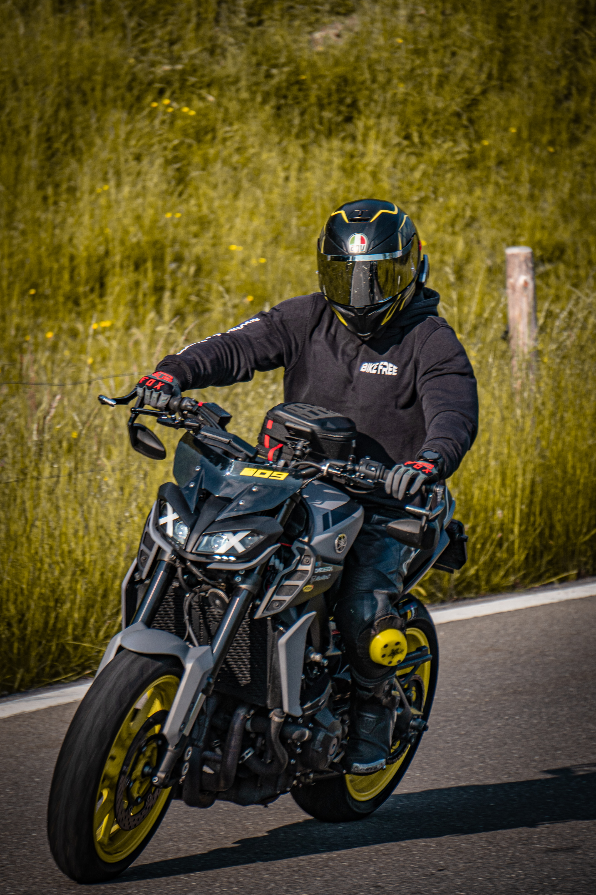
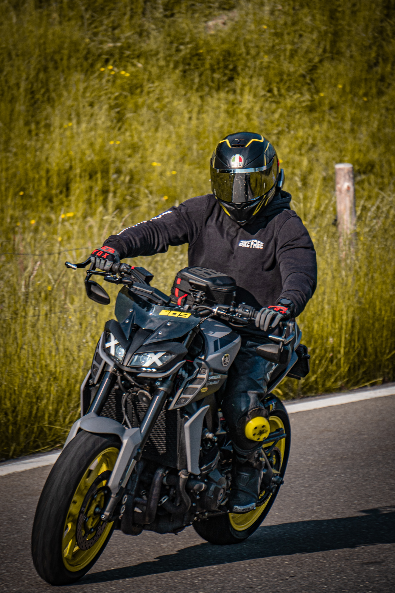

Über Mich
Entdecken Sie meinen Weg durch Ausbildung, Praktika und Erfahrungen!
Aug 2019 - Jul 2022
Ausbildung als Kaufmann EFZ Profil E
Gemeindeverwaltung Frutigen
Aug 2022 - Jul 2023
Berufsmaturität Typ Wirtschaft
Wirtschaftsschule Thun
Sep 2022 - Okt 2024
Aushilfe 20% - Verkauf Unterhaltungselektronik
MediaMarkt Thun
Aug 2023 - Heute
BSc Wirtschaftsinformatik
Berner Fachhochschule
Jan 2024 - Dez 2025
Aushilfe 20% - Finanzverwaltung und Softwareumstellung
Gemeindeverwaltung Wattenwil
Okt 2024 - Heute
Aushilfe 20% - Bildung, Einwohnerkontrolle, Bauverwaltung, Finanzverwaltung
Gemeindeverwaltung Frutigen
Zertifikate und Zeugnisse
Meine Hobbys
In diesem Teil zeige ich, wie ich meine Freizeit verbringe
Fotographie / Videographie
Momente festhalten, Erinnerungen schaffen und die Welt durch meine Linse sehen. Ich liebe es, die Schönheit der Natur und die Emotionen der Menschen einzufangen. Egal ob Landschaften, Porträts oder Action-Shots.


Skate- und Snowboarden
Im Sommer wie auch im Winter verbringe ich meine Zeit gerne auf dem Board. Im Sommer mit dem Skateboard und im Winter mit dem Snowboard. Ich liebe es, neue Tricks zu lernen und meine Fähigkeiten zu verbessern.


Fahrzeuge
Ich bin ein leidenschaftlicher Auto- / Motorradfahrer und geniesse es, neue und auch alte Fahrzeuge zu fahren. Ich interessiere mich auch für die Technik hinter den Fahrzeugen und liebe es, an meinem eigenen zu schrauben.


 
